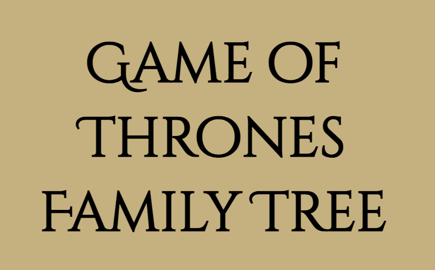
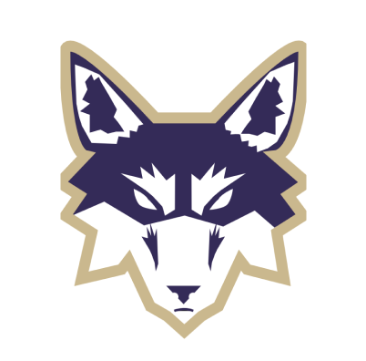
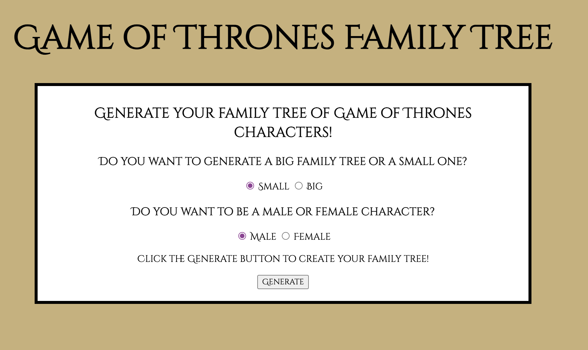
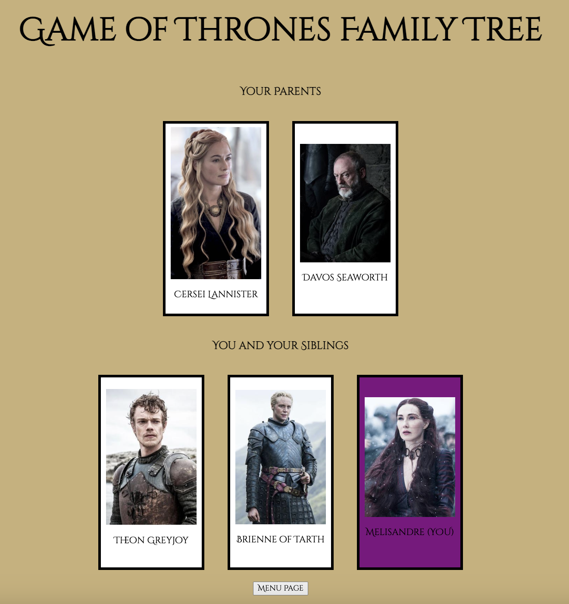
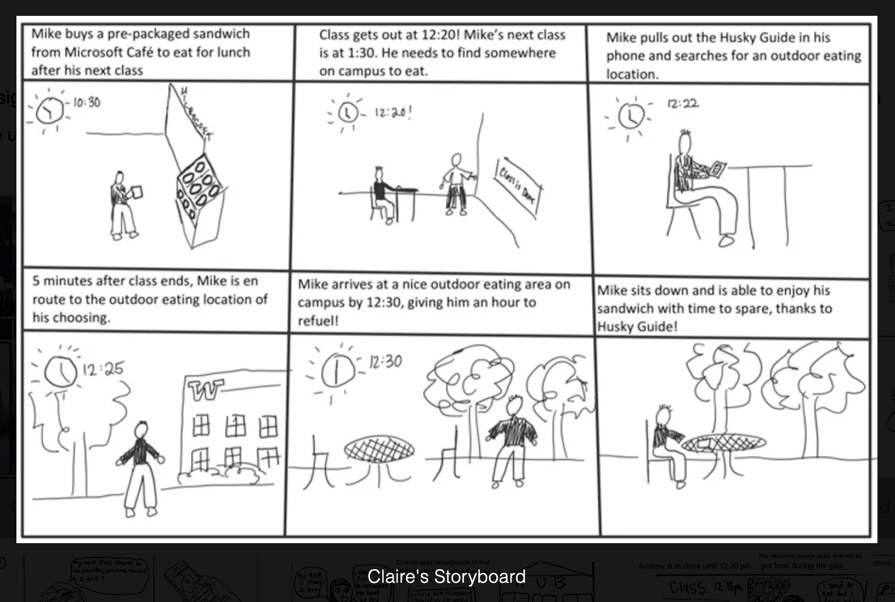
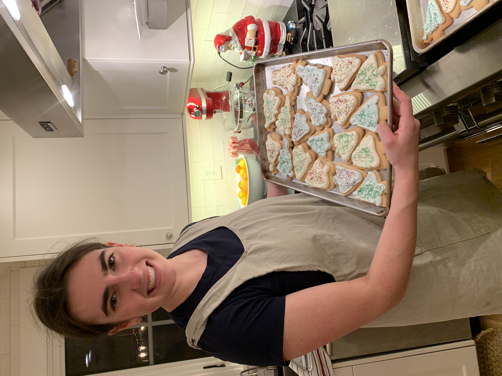

Hi, I'm Claire!
I'm a puzzler and a problem solver.
I want to make my skills work for you.
Projects

Gallery Curator
Husky Guide

Designing with Large Language Models for Debugging Assistence
UW HCDE, Winter 2023
This winter, I will be joining HCDE professor Dr. David W. McDonald, Microsoft's Dr. Colin Clement, and fellow HCDE students on the Designing with Large Language Models for Debugging Assistance research project.
Within this project, I am looking forward to deepening my understanding of IDEs and further developing my python proficiency and prototyping skills. This will be my first experience working with LLMs, and we will be working with them on OpenAI. I will post deliverables from my work and research in the coming months.
Game of Thrones Family Tree Generator
Overview
The Game of Thrones Family Tree Generator is a website that I designed that accesses a public API to generate a random family tree of character from the renowned HBO series. The user can indicate specifics for the generation of their tree on the front page, such as the size of their family tree and their preferred gender for the main character.

Objectives
The objective of this project was to implement fetch requests to a public API and subsequently handle the response from the request. This involved incorporating a status check function, converting the reponse to the appropriate type, integrating handler methods to express the API response in the desired fashion, and developing meaningful error handling.

Process
For this project, I decided to take it in the direction of a family tree since I could use my knowledge of appending children to the DOM (Document Object Model) via the JavaScript as a way of build the family tree. The user's indication of a small or big family tree determined whether I was appending children to two or four different sections on the main DOM.
I created two different arrays of numbers, one of numbers that matched female characters and another with numbers that matched male characters. Numbers were randomly selected from these arrays and passed in as GET request query parameters to return a JSON object of the character's information.
Once the JSON object was returned, a character card HTML element was made that included the name and photo of the random male or female character using the information in the JSON object and then was appended to the appropriate section of the DOM (family tree level).
Key Takeaways
From this project, I grasped the usage of .then/.catch chains for handling fetch requests to REST APIs. I also gained proficiency with integrating data from different parts of my code to generate fetch requests with specific query parameters as well as accessing and transforming data from the returned JSON object to create a nested HTML element to attach to the DOM.
Moving forward, things I would do to improve this project that I didn't get a chance to implement would be eliminating redundancy of generated characters generated so that an individuals could only appear once on the family tree. In review, this project allowed me to extensively experiment with handling APIs and fetch requests and further master my ability to generate HTML elements and manipulate the DOM.
What is Husky Guide?
Husky Guide is a mobile device app mock-up developed by me and two other classmates in our Introduction to User-Centered Design class. The app was an interactive map of campus that contained information about different dining locations and provided users with directions to those locations.
The Problem
This project was completed in Fall 2021, which was the University of Washington's first quarter with in-person classes following the COVID shutdown. Upon their return to campus, students were faced with many new safety and health regulations to minimize the spread of COVID. Many of these regulations revolved around eating and dining on campus, and the challenge as to where to go to buy and eat food on campus arose. Students also had different on-campus dining needs, such as access to microwaves to warm up food brought from home. Display and communication of dining and masking regulations in different places was both minimal and confusing, thus creating the need for a single source of information for University of Washington students.
The Goal
Our goal was to enable students to locate establishments and services on campus that fulfill their dining needs in a straightforward fashion. This included directions to desired location from the user's current location, and detailed information about regulations and menus from on-campus dining options.
Research
In the research stage, we conducted multiple steps to better understand the targeted users and their needs. We conducted interviews, developed user personas, and created a user journey map.
Design
In the design stage, we created storyboards and information architecture.

When creating storyboards, I created two versions: one with photos of a potential storyline that I developed and reenacted and another with illustrations. The information architecture outlined the four major functionalities of our app and offered visualization of the levels and variety of information stored within the different functionalities.
Prototyping
Finally, in the prototyping stage, our development path started with lo-fi prototypes before moving onto the development of wireframes, and then hi-fi prototypes.
Project Outcome
I'm a junior at the University of Washington where I am studying Human-Centered Design & Engineering with a focus in Human-Computer Interaction. I am a member of the Women's Rowing team at UW, where I currently serve as a Team Culture Officer on the Varsity Boat Club leadership team.
I found a love for programming through HCDE, and took my first coding class last fall. Since then, I have pursued deeper knowledge and mastery of OOP languages, data structures, and algorithms in addition to my engineering courses, and recently completed a Web Programming class that enabled me to build this portfolio website from scratch! I am excited to move forward in the field of user-centered design with my passion for programming to work towards building user-friendly, intuitive interfaces that are both visually appealing and efficiently implemented. I have a lot more to learn, but I am enjoying every day of the process and figuring out how I can use my skills for good!

Outside of rowing and school, I am an avid outdoorswoman and love to be in the kitchen and the garden. I especially love to nordic ski in the Methow Valley and backpack in the Cascades. The newest dessert I learned to make was tiramisu, as I was lucky enough to be mentored by my Italian roommate!